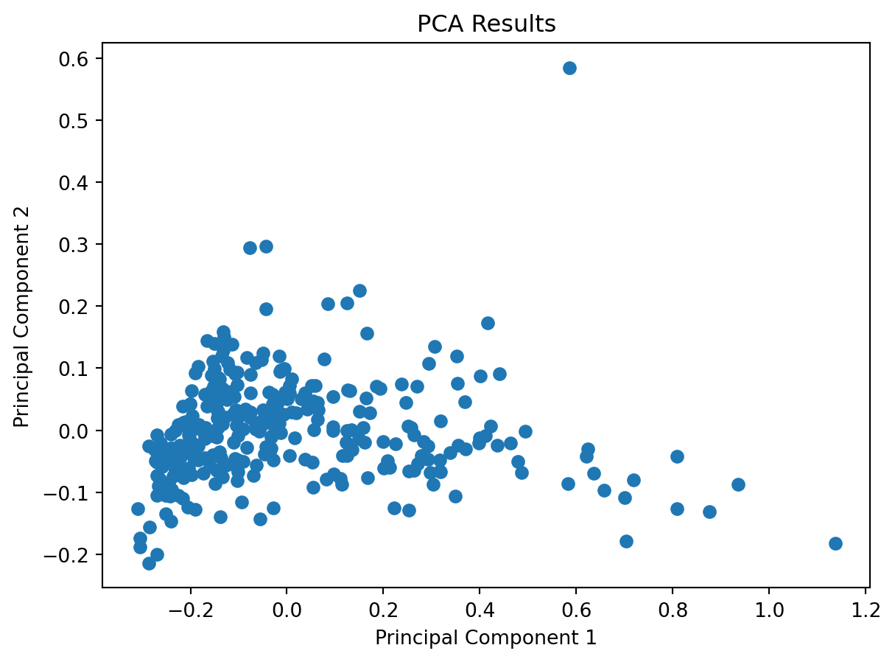
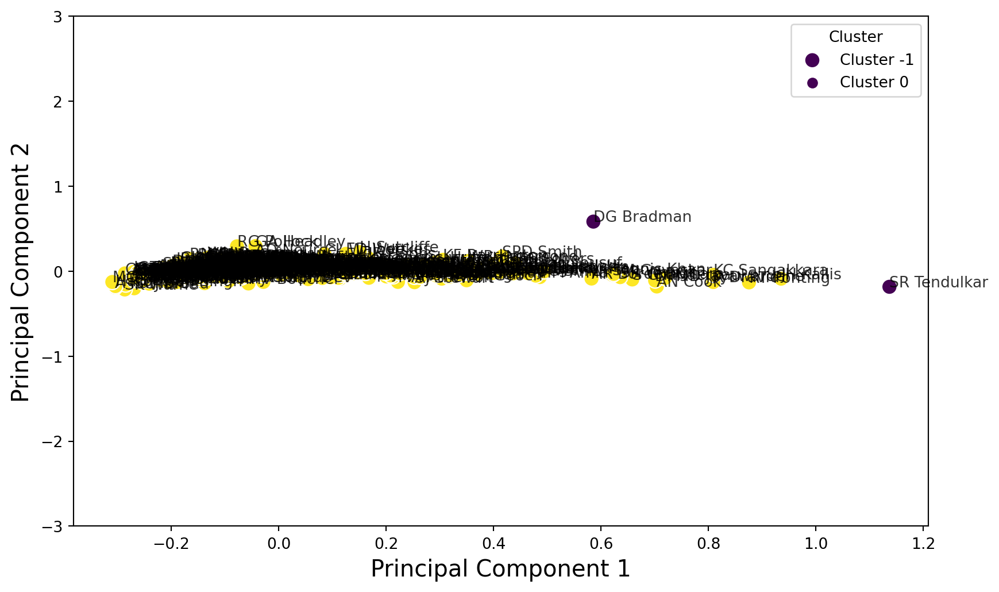

import pandas as pd
import numpy as np
import matplotlib.pyplot as pl
import seaborn as snsImporting libraries
Read the data
import pandas as pd
# Read the data
data = pd.read_csv('Cricket_data.txt', sep='\t')
# Display the first few rows of the data
data| Player | Span | Mat | Inn | NO | Runs | HS | Avg | 100 | 50 | 0 | Player Profile | |
|---|---|---|---|---|---|---|---|---|---|---|---|---|
| 0 | SR Tendulkar (INDIA) | 1989-2013 | 200 | 329 | 33 | 15921 | 248* | 53.78 | 51 | 68 | 14 | http://stats.espncricinfo.com/ci/content/playe... |
| 1 | RT Ponting (AUS) | 1995-2012 | 168 | 287 | 29 | 13378 | 257 | 51.85 | 41 | 62 | 17 | http://stats.espncricinfo.com/ci/content/playe... |
| 2 | JH Kallis (ICC/SA) | 1995-2013 | 166 | 280 | 40 | 13289 | 224 | 55.37 | 45 | 58 | 16 | http://stats.espncricinfo.com/ci/content/playe... |
| 3 | R Dravid (ICC/INDIA) | 1996-2012 | 164 | 286 | 32 | 13288 | 270 | 52.31 | 36 | 63 | 8 | http://stats.espncricinfo.com/ci/content/playe... |
| 4 | AN Cook (ENG) | 2006-2018 | 161 | 291 | 16 | 12472 | 294 | 45.35 | 33 | 57 | 9 | http://stats.espncricinfo.com/ci/content/playe... |
| ... | ... | ... | ... | ... | ... | ... | ... | ... | ... | ... | ... | ... |
| 2996 | CA Snedden (NZ) | 1947-1947 | 1 | - | - | - | - | - | - | - | - | http://stats.espncricinfo.com/ci/content/playe... |
| 2997 | VN Swamy (INDIA) | 1955-1955 | 1 | - | - | - | - | - | - | - | - | http://stats.espncricinfo.com/ci/content/playe... |
| 2998 | Usman Shinwari (PAK) | 2019-2019 | 1 | - | - | - | - | - | - | - | - | http://stats.espncricinfo.com/ci/content/playe... |
| 2999 | CM Willoughby (SA) | 2003-2003 | 2 | - | - | - | - | - | - | - | - | http://stats.espncricinfo.com/ci/content/playe... |
| 3000 | JW Wilson (AUS) | 1956-1956 | 1 | - | - | - | - | - | - | - | - | http://stats.espncricinfo.com/ci/content/playe... |
3001 rows × 12 columns
Identify null data
data.apply(pd.isnull).sum()/data.shape[0]Player 0.0
Span 0.0
Mat 0.0
Inn 0.0
NO 0.0
Runs 0.0
HS 0.0
Avg 0.0
100 0.0
50 0.0
0 0.0
Player Profile 0.0
dtype: float64data.describe(include='object')| Player | Span | Inn | NO | Runs | HS | Avg | 100 | 50 | 0 | Player Profile | |
|---|---|---|---|---|---|---|---|---|---|---|---|
| count | 3001 | 3001 | 3001 | 3001 | 3001 | 3001 | 3001 | 3001 | 3001 | 3001 | 3001 |
| unique | 2995 | 1140 | 198 | 49 | 1188 | 465 | 1598 | 40 | 57 | 35 | 3001 |
| top | Imran Khan (PAK) | 2019-2019 | 2 | 0 | 0 | 5 | - | 0 | 0 | 0 | http://stats.espncricinfo.com/ci/content/playe... |
| freq | 2 | 45 | 374 | 953 | 52 | 40 | 88 | 2203 | 1619 | 854 | 1 |
cricket=data[["Player","Span","Mat","Inn","Runs","Avg","100","50"]].copy()
cricket.columns=["player","span","mat","inn","runs","avg","100","50"]
cricket.head()| player | span | mat | inn | runs | avg | 100 | 50 | |
|---|---|---|---|---|---|---|---|---|
| 0 | SR Tendulkar (INDIA) | 1989-2013 | 200 | 329 | 15921 | 53.78 | 51 | 68 |
| 1 | RT Ponting (AUS) | 1995-2012 | 168 | 287 | 13378 | 51.85 | 41 | 62 |
| 2 | JH Kallis (ICC/SA) | 1995-2013 | 166 | 280 | 13289 | 55.37 | 45 | 58 |
| 3 | R Dravid (ICC/INDIA) | 1996-2012 | 164 | 286 | 13288 | 52.31 | 36 | 63 |
| 4 | AN Cook (ENG) | 2006-2018 | 161 | 291 | 12472 | 45.35 | 33 | 57 |
converting to numerical int data
# Convert the 'runs' column to a numeric data type (int)
cricket['runs'] = cricket['runs'].str.replace(',', '', regex=True).str.extract('(\d+)').astype(float)
# Filter the data to select players with more than 5000 runs
batsman = cricket[cricket['runs'] > 2000]
# Display the filtered data in column form
batsman.head()| player | span | mat | inn | runs | avg | 100 | 50 | |
|---|---|---|---|---|---|---|---|---|
| 0 | SR Tendulkar (INDIA) | 1989-2013 | 200 | 329 | 15921.0 | 53.78 | 51 | 68 |
| 1 | RT Ponting (AUS) | 1995-2012 | 168 | 287 | 13378.0 | 51.85 | 41 | 62 |
| 2 | JH Kallis (ICC/SA) | 1995-2013 | 166 | 280 | 13289.0 | 55.37 | 45 | 58 |
| 3 | R Dravid (ICC/INDIA) | 1996-2012 | 164 | 286 | 13288.0 | 52.31 | 36 | 63 |
| 4 | AN Cook (ENG) | 2006-2018 | 161 | 291 | 12472.0 | 45.35 | 33 | 57 |
# Use .loc to update the 'Player' column
batsman.loc[:, 'player'] = batsman['player'].str.replace(r'\s*\(.*\)', '', regex=True)
# Display the DataFrame with the country names removed
batsman.tail()| player | span | mat | inn | runs | avg | 100 | 50 | |
|---|---|---|---|---|---|---|---|---|
| 308 | CJL Rogers | 2008-2015 | 25 | 48 | 2015.0 | 42.87 | 5 | 14 |
| 309 | KOA Powell | 2011-2018 | 40 | 76 | 2011.0 | 26.81 | 3 | 6 |
| 310 | AC Hudson | 1992-1998 | 35 | 63 | 2007.0 | 33.45 | 4 | 13 |
| 311 | KL Rahul | 2014-2019 | 36 | 60 | 2006.0 | 34.58 | 5 | 11 |
| 312 | DN Sardesai | 1961-1972 | 30 | 55 | 2001.0 | 39.23 | 5 | 9 |
# List of names to delete
names_to_delete = ['SR Tendulkar', 'DG Bradman']
# Filter out rows with the specified names
batsman = batsman[~batsman['player'].isin(names_to_delete)]
batsman.head()| player | span | mat | inn | runs | avg | 100 | 50 | |
|---|---|---|---|---|---|---|---|---|
| 1 | RT Ponting | 1995-2012 | 168 | 287 | 13378.0 | 51.85 | 41 | 62 |
| 2 | JH Kallis | 1995-2013 | 166 | 280 | 13289.0 | 55.37 | 45 | 58 |
| 3 | R Dravid | 1996-2012 | 164 | 286 | 13288.0 | 52.31 | 36 | 63 |
| 4 | AN Cook | 2006-2018 | 161 | 291 | 12472.0 | 45.35 | 33 | 57 |
| 5 | KC Sangakkara | 2000-2015 | 134 | 233 | 12400.0 | 57.4 | 38 | 52 |
#to save the players name for future
player = batsman['player'].tolist()# Split the 'span' values into start and end years
batsman[['Start_Year', 'End_Year']] = batsman['span'].str.split('-', expand=True).astype(int)
# Calculate the duration in years
batsman['Span_yrs'] = batsman['End_Year'] - batsman['Start_Year'] + 1 # Adding 1 to include both start and end years
# Display the DataFrame with the duration calculated
batsman| player | span | mat | inn | runs | avg | 100 | 50 | Start_Year | End_Year | Span_yrs | |
|---|---|---|---|---|---|---|---|---|---|---|---|
| 1 | RT Ponting | 1995-2012 | 168 | 287 | 13378.0 | 51.85 | 41 | 62 | 1995 | 2012 | 18 |
| 2 | JH Kallis | 1995-2013 | 166 | 280 | 13289.0 | 55.37 | 45 | 58 | 1995 | 2013 | 19 |
| 3 | R Dravid | 1996-2012 | 164 | 286 | 13288.0 | 52.31 | 36 | 63 | 1996 | 2012 | 17 |
| 4 | AN Cook | 2006-2018 | 161 | 291 | 12472.0 | 45.35 | 33 | 57 | 2006 | 2018 | 13 |
| 5 | KC Sangakkara | 2000-2015 | 134 | 233 | 12400.0 | 57.4 | 38 | 52 | 2000 | 2015 | 16 |
| ... | ... | ... | ... | ... | ... | ... | ... | ... | ... | ... | ... |
| 308 | CJL Rogers | 2008-2015 | 25 | 48 | 2015.0 | 42.87 | 5 | 14 | 2008 | 2015 | 8 |
| 309 | KOA Powell | 2011-2018 | 40 | 76 | 2011.0 | 26.81 | 3 | 6 | 2011 | 2018 | 8 |
| 310 | AC Hudson | 1992-1998 | 35 | 63 | 2007.0 | 33.45 | 4 | 13 | 1992 | 1998 | 7 |
| 311 | KL Rahul | 2014-2019 | 36 | 60 | 2006.0 | 34.58 | 5 | 11 | 2014 | 2019 | 6 |
| 312 | DN Sardesai | 1961-1972 | 30 | 55 | 2001.0 | 39.23 | 5 | 9 | 1961 | 1972 | 12 |
311 rows × 11 columns
#sns.pairplot(batsman)
#pl.show()batsman = batsman.drop(['player'], axis = 1)
batsman.head()| span | mat | inn | runs | avg | 100 | 50 | Start_Year | End_Year | Span_yrs | |
|---|---|---|---|---|---|---|---|---|---|---|
| 1 | 1995-2012 | 168 | 287 | 13378.0 | 51.85 | 41 | 62 | 1995 | 2012 | 18 |
| 2 | 1995-2013 | 166 | 280 | 13289.0 | 55.37 | 45 | 58 | 1995 | 2013 | 19 |
| 3 | 1996-2012 | 164 | 286 | 13288.0 | 52.31 | 36 | 63 | 1996 | 2012 | 17 |
| 4 | 2006-2018 | 161 | 291 | 12472.0 | 45.35 | 33 | 57 | 2006 | 2018 | 13 |
| 5 | 2000-2015 | 134 | 233 | 12400.0 | 57.4 | 38 | 52 | 2000 | 2015 | 16 |
columns=["runs","avg","100"]from sklearn.preprocessing import MinMaxScaler
from sklearn.decomposition import PCA
# Initialize PCA with the number of components you want to retain
n_components = 2 # Adjust as needed
pca = PCA(n_components=n_components)
# Initialize the MinMaxScaler
scaler = MinMaxScaler()
# Apply Min-Max scaling to your data
scaled_data = scaler.fit_transform(batsman[columns])
# Fit and transform PCA on the scaled data
batter = pca.fit_transform(scaled_data)
batterarray([[ 1.03695410e+00, -2.69940761e-01],
[ 1.12062664e+00, -2.12675013e-01],
[ 9.72643357e-01, -2.41727294e-01],
[ 8.12777697e-01, -3.26136693e-01],
[ 1.00133191e+00, -1.13313620e-01],
[ 8.76027429e-01, -1.65416432e-01],
[ 8.03714570e-01, -1.77324674e-01],
[ 8.35535348e-01, -2.16051623e-01],
[ 7.16629780e-01, -1.52257191e-01],
[ 7.71731820e-01, -1.47529266e-01],
[ 7.51496323e-01, -1.16826152e-01],
[ 7.60099920e-01, -9.84197453e-02],
[ 5.78313905e-01, -1.44447188e-01],
[ 5.81720742e-01, -1.10475759e-01],
[ 4.10454723e-01, -1.78356682e-01],
[ 5.51630093e-01, 2.02856905e-03],
[ 5.45407348e-01, -5.96393461e-02],
[ 4.01370162e-01, -1.00331450e-01],
[ 5.14558283e-01, -2.75678222e-02],
[ 5.67684501e-01, -7.00287954e-02],
[ 6.09662762e-01, -4.50051328e-02],
[ 5.02929967e-01, -4.73960233e-02],
[ 5.22583395e-01, -3.18357048e-02],
[ 2.88727946e-01, -2.00119529e-01],
[ 3.64045829e-01, -1.11125154e-01],
[ 4.57542834e-01, -6.78757801e-02],
[ 4.45567474e-01, -5.35478544e-02],
[ 5.99487129e-01, 1.25646805e-01],
[ 3.51933656e-01, -1.53985937e-01],
[ 2.39332032e-01, -2.05109852e-01],
[ 3.69502154e-01, -1.30341543e-01],
[ 4.08069878e-01, -8.38606584e-02],
[ 3.78184869e-01, -1.00150691e-01],
[ 3.43006322e-01, -7.55111423e-02],
[ 4.86257974e-01, 5.16171859e-02],
[ 3.27965069e-01, -9.70326853e-02],
[ 3.61347897e-01, -3.71496336e-02],
[ 3.00150266e-01, -1.14648941e-01],
[ 3.49336173e-01, -9.57022464e-02],
[ 3.45310967e-01, 8.55973620e-03],
[ 3.58956301e-01, -5.95034750e-02],
[ 5.10205303e-01, 1.85504652e-01],
[ 2.44794917e-01, -9.51892914e-02],
[ 2.57377824e-01, -9.84092269e-02],
[ 5.34353047e-01, 1.06940810e-01],
[ 1.42898156e-01, -1.14213277e-01],
[ 6.03399858e-01, 2.58853727e-01],
[ 3.38367599e-01, -2.13239846e-02],
[ 4.78770635e-01, 9.96540401e-02],
[ 4.04356726e-01, -1.85011346e-03],
[ 2.97842037e-01, -1.29782098e-01],
[ 1.95539194e-01, -1.20780230e-01],
[ 4.36726719e-01, 1.73972519e-01],
[ 2.49890744e-01, -8.69695367e-02],
[ 4.61362275e-01, 2.15576042e-01],
[ 2.56943603e-01, -3.10402788e-02],
[ 1.24628706e-01, -1.18122510e-01],
[ 3.72297707e-01, 9.63198443e-02],
[ 2.67999048e-01, -5.80715056e-02],
[ 3.39226040e-01, 1.10467776e-01],
[ 2.44932715e-01, 4.87340514e-02],
[ 3.07177760e-01, -1.93141179e-02],
[ 1.69071959e-01, -4.97705669e-02],
[ 3.26657407e-01, 4.99214279e-02],
[ 1.63834349e-01, -4.62725445e-02],
[ 2.08151008e-01, -7.06237100e-04],
[ 1.85766330e-01, -3.05675800e-02],
[ 1.42391333e-01, -7.46897299e-02],
[ 1.68972338e-01, -1.58399635e-04],
[ 2.73307932e-01, 1.08470393e-01],
[ 1.77417998e-01, -2.61282404e-03],
[ 9.48593095e-02, -1.20992480e-01],
[ 7.42494950e-02, -1.31239104e-01],
[ 2.76050035e-01, 9.74892335e-02],
[ 1.88975445e-01, -5.18534205e-02],
[ 9.88132770e-02, 2.23320355e-02],
[ 2.33350625e-01, 7.30374883e-02],
[-1.08240404e-01, -2.10408152e-01],
[ 1.24989870e-01, -8.11846944e-02],
[ 1.45343902e-01, -4.41049051e-02],
[ 2.01086357e-01, 1.08891803e-01],
[ 2.02152732e-01, 3.67767048e-02],
[ 2.98245689e-01, 2.60977984e-01],
[ 2.02488406e-01, 1.01097090e-01],
[ 1.26622896e-01, -4.40343071e-03],
[ 5.12523207e-02, -8.36493380e-02],
[ 1.29095762e-01, 4.72859215e-03],
[-7.72338666e-02, -1.93873285e-01],
[ 1.57921020e-01, 9.20679126e-02],
[ 1.13152416e-01, 9.20617195e-02],
[ 2.34169850e-02, -1.63928198e-01],
[ 1.01019658e-01, 3.19870990e-02],
[-8.71603846e-02, -8.82939275e-02],
[ 1.09980032e-01, 5.87334000e-02],
[ 8.24017777e-02, 6.22027567e-02],
[-4.91437303e-02, -3.94877019e-02],
[ 9.47966632e-02, 1.11322953e-01],
[ 1.66589278e-01, 1.96826058e-01],
[ 2.56810355e-02, 6.06391137e-02],
[-6.59269521e-03, -6.73537491e-02],
[ 1.92347234e-02, -9.20554752e-02],
[ 3.02151567e-01, 3.66746500e-01],
[ 1.00060731e-01, 6.42564644e-02],
[ 4.68151045e-02, 4.89768884e-02],
[ 1.13612942e-01, 1.15984532e-01],
[-1.55462440e-01, -1.75345626e-01],
[ 1.76299278e-02, -2.51627784e-02],
[ 7.23318643e-02, 1.50964440e-01],
[ 2.60931432e-01, 3.34693588e-01],
[-5.03523821e-02, -5.19684831e-02],
[-4.46116426e-02, -4.10474759e-02],
[-5.20165046e-02, -7.86681131e-02],
[ 1.01776298e-01, 1.14338074e-01],
[ 6.78489514e-02, 8.15107082e-02],
[-1.47099579e-01, -1.14503232e-01],
[ 3.32199349e-02, 4.94933098e-02],
[-2.19051701e-01, -2.10097395e-01],
[-7.84332820e-03, 6.06306675e-02],
[-3.29268487e-02, -7.78594359e-03],
[-9.49732882e-02, -8.51695311e-02],
[-7.17511886e-03, 2.16503896e-02],
[ 1.19042440e-02, 8.39256407e-02],
[-1.19748304e-01, -6.61085582e-02],
[ 3.64614668e-02, 1.08359831e-01],
[-1.11995067e-02, 5.54261054e-02],
[-4.19264601e-02, -1.80637938e-02],
[ 3.11015116e-02, 8.45084553e-02],
[-5.88884348e-02, 3.10344656e-02],
[ 4.66458937e-02, 1.20449028e-01],
[-1.33773810e-01, -6.44528491e-02],
[-2.19096508e-02, -1.48820035e-02],
[-6.92407695e-02, 1.18381927e-02],
[-1.49920684e-01, -1.01797448e-01],
[ 3.50935127e-02, 9.46395959e-02],
[-1.06514841e-01, 3.32468372e-02],
[ 5.22381923e-02, 2.09255002e-01],
[-9.78291636e-03, 5.16745495e-02],
[-1.88979911e-01, -1.08610441e-01],
[-6.87392895e-03, 1.09435129e-01],
[-7.00840055e-02, -5.15364516e-02],
[-1.15147424e-01, 6.10574957e-04],
[-3.87481938e-02, 5.88888277e-02],
[ 2.02380272e-01, 3.27858691e-01],
[-1.11730282e-01, -4.15650698e-02],
[-2.25324485e-01, -8.63028446e-02],
[-1.71844965e-01, -3.64910562e-02],
[-1.34187486e-01, -1.91752891e-02],
[-3.69540233e-02, 4.78861428e-03],
[-1.71381849e-02, 6.51502178e-02],
[-7.34114562e-02, -5.91399378e-03],
[-5.75917923e-02, 2.30840761e-02],
[-2.83006076e-01, -1.91247239e-01],
[ 3.33339638e-02, 1.58437139e-01],
[-1.02383908e-04, 7.43822169e-02],
[-7.87809311e-02, 4.09968178e-02],
[ 2.95669284e-02, 1.54609915e-01],
[-7.22870987e-02, 5.48372246e-02],
[-5.21308086e-02, 1.70071317e-02],
[-1.10533170e-02, 9.19588622e-02],
[ 3.97323609e-02, 1.58368114e-01],
[-1.24743515e-02, 1.95829181e-01],
[-1.06918998e-01, 7.76221043e-03],
[-1.54485568e-01, -7.40340240e-02],
[ 1.05616595e-02, 2.18474363e-01],
[-2.22395631e-01, -1.36146301e-01],
[-1.81489531e-01, -8.87753841e-02],
[-1.84129573e-01, -6.49506023e-02],
[-1.08919850e-01, 4.34782382e-02],
[-2.07659712e-01, -9.95826726e-02],
[-1.64317391e-01, -9.90157199e-02],
[-2.17366307e-01, -8.21573550e-02],
[-2.00501651e-01, -5.23493411e-02],
[-6.69415558e-02, 3.40052099e-03],
[-1.75512781e-01, -3.22704912e-03],
[-1.09635740e-01, 6.26057227e-02],
[-2.22298842e-01, -5.71042539e-02],
[-1.63148473e-01, 2.27804526e-02],
[-4.32843292e-02, 1.57131884e-01],
[-1.21661458e-01, 5.08748426e-02],
[-6.42527385e-02, 1.01158312e-01],
[-9.27412577e-02, 5.58099383e-02],
[-1.12309242e-01, 4.82601944e-02],
[-4.20840435e-01, -3.12271903e-01],
[-4.47225795e-01, -3.32335854e-01],
[-3.18263120e-01, -1.53323402e-01],
[-1.46827777e-01, 4.57550492e-02],
[-1.50968466e-01, 6.53520474e-02],
[-8.50566189e-02, 1.30081139e-01],
[-3.63418800e-01, -2.01726736e-01],
[-1.15874799e-02, 1.86579304e-01],
[-1.93458784e-01, -2.31894059e-03],
[-2.71496818e-01, -8.27396961e-02],
[-1.22931353e-01, 1.02718820e-01],
[-1.46026682e-01, 9.08879159e-02],
[-7.52426834e-02, 1.63707623e-01],
[-1.47984015e-01, 4.04703515e-02],
[ 4.65070861e-02, 3.30241476e-01],
[-1.59058886e-01, 2.18147607e-02],
[-1.19747836e-01, 9.38204034e-02],
[-8.31786090e-02, 1.59862655e-01],
[-3.19479989e-01, -1.73621212e-01],
[-3.66779452e-01, -2.30871752e-01],
[-1.10946990e-01, 9.08230352e-02],
[-2.50881443e-01, -5.12294442e-02],
[-3.42617513e-01, -1.58245126e-01],
[-1.59088411e-01, 6.11266203e-02],
[-3.33089958e-01, -1.40550783e-01],
[-2.43954898e-01, -3.50303738e-02],
[-2.85195092e-01, -5.30848455e-02],
[-2.10513258e-01, 2.47873542e-03],
[-2.14036128e-01, 2.21380297e-02],
[-1.62973038e-01, 3.69459014e-02],
[-2.03391840e-01, -6.22392014e-03],
[-1.38643396e-01, 1.07828000e-01],
[-2.80267536e-01, -1.13638065e-01],
[-9.05721250e-02, 1.93273490e-01],
[-2.01752757e-01, -1.02596874e-03],
[-1.24685642e-01, 1.85071930e-01],
[-4.75762876e-02, 1.94107466e-01],
[-3.40622437e-01, -1.39322393e-01],
[-1.13492608e-01, 1.05437920e-01],
[-6.39552493e-02, 2.44371702e-01],
[-2.99925697e-01, -1.16541674e-01],
[-2.60848014e-01, -4.78559667e-02],
[-3.23137294e-01, -2.07652675e-01],
[-1.64582588e-01, 9.68426954e-02],
[-1.72049671e-01, 3.53261080e-02],
[-9.49622383e-02, 1.70828403e-01],
[-2.62111852e-01, -6.75953019e-02],
[-1.80152267e-01, 7.59976082e-02],
[-2.20618804e-01, 5.84237606e-02],
[-1.35015023e-01, 8.21808402e-02],
[-2.33855646e-01, 3.68576899e-02],
[-2.55764093e-01, -7.67785815e-02],
[-2.07713387e-01, 1.11056840e-02],
[-3.06024517e-01, -5.72233606e-02],
[-2.47171048e-01, -3.03819296e-02],
[-3.12817885e-01, -9.10078303e-02],
[-2.18943570e-01, 2.32440422e-02],
[-3.24764505e-01, -1.10606877e-01],
[-3.01764891e-01, -9.57408539e-02],
[-1.31960468e-01, 1.51405441e-01],
[-2.52423963e-01, -5.88956445e-03],
[-2.48869988e-01, 2.87761125e-02],
[-2.44899626e-01, -4.07311378e-02],
[-8.34628090e-02, 2.42983466e-01],
[-1.03730613e-01, 2.08529365e-01],
[-2.88219544e-01, 1.33028008e-02],
[-4.67035204e-01, -2.98208266e-01],
[-1.79042376e-01, 1.06909515e-01],
[-2.63867207e-01, 3.70872467e-02],
[-2.25685235e-01, -2.37556116e-02],
[-1.62724863e-01, 1.12118435e-01],
[-3.44367801e-01, -1.28612606e-01],
[-1.67454351e-01, 8.07816129e-02],
[-2.61562817e-01, -3.14053081e-02],
[-1.69418827e-01, 1.04624187e-01],
[-1.34614191e-01, 1.40006025e-01],
[-4.29051279e-01, -2.47508470e-01],
[-1.38174491e-01, 1.09114219e-01],
[-2.99144867e-01, -6.62619705e-02],
[-2.95579028e-01, -3.37591492e-02],
[-3.18561486e-01, -9.73338407e-02],
[-3.61250904e-01, -1.15886729e-01],
[-3.32044882e-01, -6.11303887e-02],
[-1.57317658e-01, 1.18466784e-01],
[-3.09977928e-01, -4.52763818e-02],
[-1.00622226e-01, 2.19879905e-01],
[-3.51676939e-01, -6.48617573e-02],
[-2.23341311e-01, 8.31520413e-02],
[-3.69362695e-01, -1.71252965e-01],
[-3.06575565e-01, -3.52454069e-02],
[-2.40290065e-01, 6.05946290e-03],
[ 5.67066105e-02, 5.01645325e-01],
[-3.54483619e-01, -6.16218864e-02],
[-4.65709069e-01, -2.80369135e-01],
[-3.01121432e-01, -6.87607568e-02],
[-3.21471776e-01, -7.65152049e-02],
[-3.87699776e-01, -1.66021407e-01],
[-3.13322523e-01, -3.56992481e-02],
[-8.92380324e-02, 2.55526813e-01],
[ 8.98157600e-02, 4.92599725e-01],
[-3.76611450e-01, -1.40645833e-01],
[-1.86373370e-01, 1.66924362e-01],
[-1.16842412e-01, 2.40171317e-01],
[-1.55448349e-01, 1.48524219e-01],
[-3.25410462e-01, -7.13260785e-02],
[-8.71931257e-02, 2.69296075e-01],
[-3.04506372e-01, -5.96909591e-02],
[-3.47694704e-01, -3.21252583e-02],
[-2.92433178e-01, -3.69588888e-02],
[-2.65236978e-01, -1.40200422e-02],
[-3.51833789e-01, -8.83994140e-02],
[-2.56940587e-01, 2.74901625e-02],
[-3.56834903e-01, -1.83670120e-02],
[-3.43163744e-01, -7.03134315e-02],
[-4.45192325e-01, -1.95780000e-01],
[-3.50543041e-01, -5.52201131e-02],
[-1.31063595e-01, 2.52461026e-01],
[-2.31129012e-01, 7.73244945e-02],
[-3.29540858e-01, -4.31221618e-02],
[-1.41396698e-01, 1.85345975e-01],
[-3.30952653e-01, 6.93052200e-03],
[-2.48497842e-01, 7.50795021e-02],
[-3.31869221e-01, -1.84607241e-02],
[-3.32202777e-01, -4.26859944e-02],
[-1.76116955e-01, 1.80304151e-01],
[-3.73468537e-01, -1.13454422e-01],
[-2.89983513e-01, 7.71112224e-03],
[-2.65168411e-01, 2.57546493e-02],
[-2.15798217e-01, 1.12891243e-01]])explained_variance = pca.explained_variance_ratio_
print("Explained variance ratio:", explained_variance)Explained variance ratio: [0.83360005 0.1513503 ]pl.scatter(batter[:, 0], batter[:, 1])
pl.xlabel('Principal Component 1')
pl.ylabel('Principal Component 2')
pl.title('PCA Results')
pl.show()
component_loadings = pca.components_
print("Principal component loadings:", component_loadings)Principal component loadings: [[ 0.65699203 0.48612356 0.57623377]
[-0.5063218 0.85082336 -0.14049142]]from sklearn.cluster import DBSCAN
from sklearn.metrics import silhouette_score
# Your data
X = batter # Your data points
best_eps = None
best_min_samples = None
best_score = -1
for eps in np.arange(0.1, 1.0, 0.1): # Adjust the range as needed
for min_samples in range(2, 11): # Adjust the range as needed
dbscan = DBSCAN(eps=eps, min_samples=min_samples)
labels = dbscan.fit_predict(X)
if len(set(labels)) > 1: # Ensure more than one cluster is formed
score = silhouette_score(X, labels)
if score > best_score:
best_score = score
best_eps = eps
best_min_samples = min_samples
print(f"Best eps: {best_eps}, Best min_samples: {best_min_samples}, Best Silhouette Score: {best_score}")Best eps: 0.2, Best min_samples: 9, Best Silhouette Score: 0.6160671083676901from sklearn.cluster import DBSCAN
# Initialize DBSCAN
dbscan = DBSCAN(eps=0.2, min_samples=2)
# Fit DBSCAN on the PCA-transformed data
cluster_labels = dbscan.fit_predict(batter)
pl.scatter(batter[:, 0], batter[:, 1], c=cluster_labels, cmap='viridis')
pl.xlabel('Principal Component 1')
pl.ylabel('Principal Component 2')
pl.title('DBSCAN Clustering Results')
pl.show()# Assuming 'player' contains the player names and 'cluster_labels' contains the cluster assignments
# Create a new DataFrame to combine the results
new_batsman = pd.DataFrame({'x': batter[:, 0], 'y': batter[:, 1], 'cluster': cluster_labels, 'player': player})
# Display the resulting DataFrame
new_batsman| x | y | cluster | player | |
|---|---|---|---|---|
| 0 | 1.036954 | -0.269941 | 0 | RT Ponting |
| 1 | 1.120627 | -0.212675 | 0 | JH Kallis |
| 2 | 0.972643 | -0.241727 | 0 | R Dravid |
| 3 | 0.812778 | -0.326137 | 0 | AN Cook |
| 4 | 1.001332 | -0.113314 | 0 | KC Sangakkara |
| ... | ... | ... | ... | ... |
| 306 | -0.176117 | 0.180304 | 0 | CJL Rogers |
| 307 | -0.373469 | -0.113454 | 0 | KOA Powell |
| 308 | -0.289984 | 0.007711 | 0 | AC Hudson |
| 309 | -0.265168 | 0.025755 | 0 | KL Rahul |
| 310 | -0.215798 | 0.112891 | 0 | DN Sardesai |
311 rows × 4 columns
# Create a scatter plot with cluster labels
pl.figure(figsize=(10, 6))
ax = sns.scatterplot(x="x", y="y", hue="cluster", data=new_batsman, palette="viridis", s=100)
# Add labels for individual data points
for x, y, player, cluster in zip(new_batsman['x'], new_batsman['y'], new_batsman['player'], new_batsman['cluster']):
pl.text(x, y, player, fontsize=10, alpha=0.8)
# Set the plot limits and labels
ax.set(ylim=(-3, 3))
pl.xlabel("Principal Component 1", fontsize=15)
pl.ylabel("Principal Component 2", fontsize=15)
# Show the legend
pl.legend(title='Cluster', loc='upper right', labels=[f'Cluster {label}' for label in new_batsman['cluster'].unique()])
# Display the plot
pl.show()
import seaborn as sns
import matplotlib.pyplot as plt
from sklearn.preprocessing import MinMaxScaler
# Set the style
sns.set(style="white")
# Normalize the "average" values
scaler = MinMaxScaler()
batsman['avg_normalized'] = scaler.fit_transform(batsman[['avg']])
# Create a scatter plot with cluster labels and manually set marker size based on "average" values
plt.figure(figsize=(10, 6))
ax = sns.scatterplot(x="x", y="y", hue="cluster", data=new_batsman, palette="viridis", sizes=(50, 500), size=batsman['avg_normalized'])
# Add labels for individual data points
for x, y, player, cluster in zip(new_batsman['x'], new_batsman['y'], new_batsman['player'], new_batsman['cluster']):
plt.text(x, y, player, fontsize=10, alpha=0.8)
# Set the plot limits and labels
ax.set(ylim=(-3, 3))
plt.xlabel("Principal Component 1", fontsize=15)
plt.ylabel("Principal Component 2", fontsize=15)
# Show the legend
plt.legend(title='Cluster', loc='best', labels=[f'Cluster {label}' for label in new_batsman['cluster'].unique()])
# Display the plot
plt.show()
import seaborn as sns
import matplotlib.pyplot as plt
from sklearn.preprocessing import MinMaxScaler
# Set the style
sns.set(style="white")
# Normalize the "average" values
scaler = MinMaxScaler()
batsman['100_normalized'] = scaler.fit_transform(batsman[['100']])
# Create a scatter plot with cluster labels and manually set marker size based on "average" values
plt.figure(figsize=(10, 6))
ax = sns.scatterplot(x="x", y="y", hue="cluster", data=new_batsman, palette="viridis", sizes=(50, 500), size=batsman['100_normalized'])
# Add labels for individual data points
for x, y, player, cluster in zip(new_batsman['x'], new_batsman['y'], new_batsman['player'], new_batsman['cluster']):
plt.text(x, y, player, fontsize=10, alpha=0.8)
# Set the plot limits and labels
ax.set(ylim=(-3, 3))
plt.xlabel("Principal Component 1", fontsize=15)
plt.ylabel("Principal Component 2", fontsize=15)
# Show the legend
plt.legend(title='Cluster', loc='upper right', labels=[f'Cluster {label}' for label in new_batsman['cluster'].unique()])
# Display the plot
plt.show()